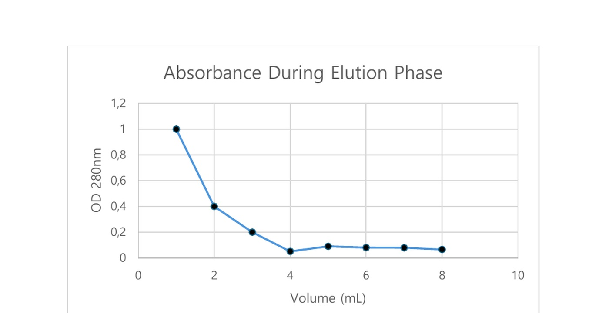
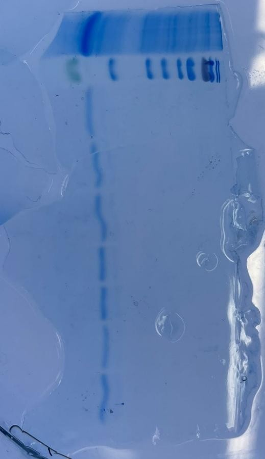
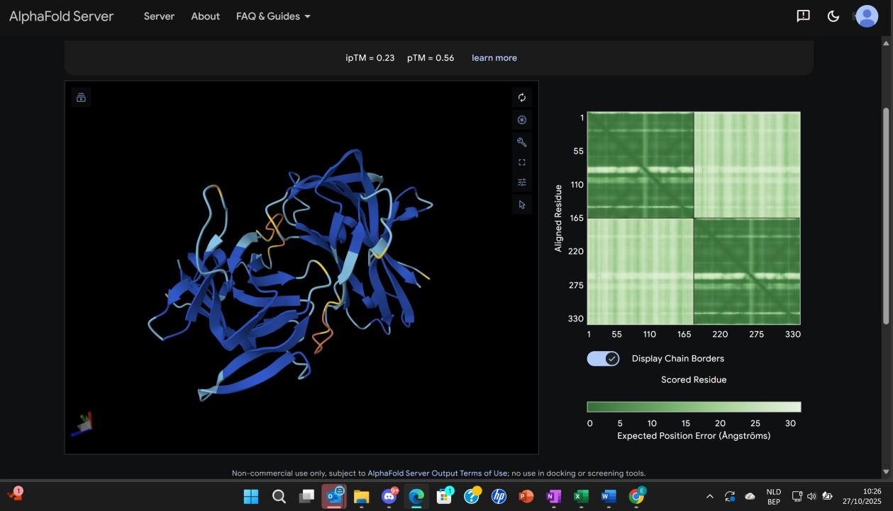

PROTEIN BIOCHEMISTRY
LECTIN EXTRACTION, PURIFICATION & SDS-PAGE
Laboratory coursework covering lectin extraction, activity testing, ion-exchange chromatography, protein quantification and gel-based protein analysis.
Laboratory focus
The practical series examined lectin activity and stability, protein purification behavior, concentration measurement and electrophoretic analysis.
Analytical skills
- Hemagglutination assay
- Ion-exchange chromatography
- UV spectrophotometry
- Bradford assay
- SDS-PAGE
Interpretation
Elution profiles and protein assays were interpreted alongside activity measurements, while SDS-PAGE was used to evaluate enrichment and apparent molecular size.
Selected visuals


